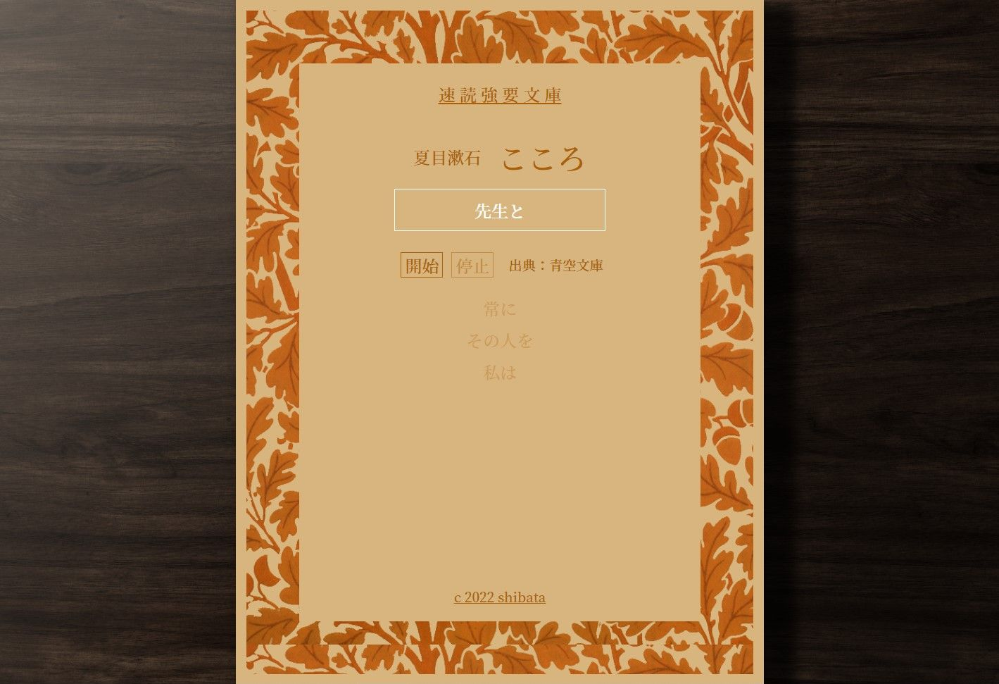

WORKS
-

速読強要文庫
人間が文章を読む際にもっとも時間をかけている視線の移動を無くすことで、速読が出来るようにしたwebアプリです。著作権の消滅した名著を使用しています。
-
typing!
タイピング練習ゲームです。 html/css/javascriptで頻出する用語を練習でき、リアルタイムでタイピング精度を見ることができます。 また、苦手なキーが一目で分かるようjavascriptで動きを付けました。
-

無限の猿アプリ
「無限の時間があれば、猿が無作為にキーボードを叩き続けれると、いずれシェイクスピアの戯曲が完成する。」という無限の猿理論の実証実験用アプリです。実際には数文字の英単語でも滅茶苦茶時間がかかります。 制作中。